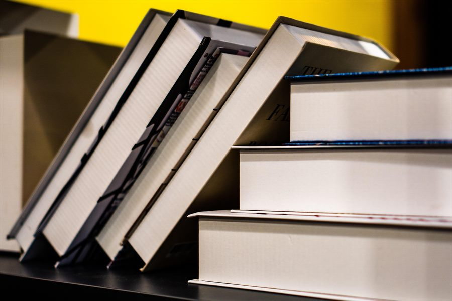

← Okuduklarım & İzlediklerim

2025 Kitaplar
#2025 Kitaplar
Okuduklarım, Dinlediklerim ve Sevdiklerim / Kendime Mini Arşiv
Dinlediklerim (Dinleme Sırasına Göre)
- Kukla – Ahmet Ümit / Ses. Gürsu Gür / Stroyside, 2020
- Ev – Nermin Yıldırım / Ses. Deniz Yüce Başarır / Stroyside, 2022*
- Zamanın Kapıları – Ayşe Övür / Ses. Bihter Dinçel / Stroyside, 2024
- Yırtıcı Kuşlar Zamanı – Ahmet Ümit / Ses. Murat Eken / Stroyside, 2025*
- Bab-ı Esrar – Ahmet Ümit / Ses. Deniz Yüce Başarır / Stroyside, 2020
- Beyoğlu Rapsodisi – Ahmet Ümit / Ses. Beyti Engin / Stroyside, 2021
- Vatan Millet Samatya – Seray Şahiner / Ses. Tilbe Saran / Stroyside, 2025*
- Beş Parasızdım ve Kadın Çok Güzeldi – Derviş Şentekin / Ses. Cem Baza / Stroyside, 2019
- Beş Parasızdım ve Katilimi Arıyordum – Derviş Şentekin / Ses. Cem Baza / Stroyside, 2019
- Misafir – Nermin Yıldırım / Ses. Deniz Yüce Başarır / Stroyside, 2019
- Mariana Çukuru – Jasmin Schreiber / Ses. Canan Çiftel / Stroyside, 2024*
- Mira’nın Kırmızı Defteri – Çağla Ural / Ses. Canan Çiftel / Stroyside, 2025*
*En Sevdiklerim: Burada kitapları sevmeme sebep; sadece kurgu değil, sadece yazarın başarısı değil, ama aynı zamanda her şeyi unutturup sizi kitaba çeken, kitabın lezzetini iki katına çıkaran, neredeyse en az yazar kadar başarılı olan seslendirme sanatçılarının da ustalığıdır.
Okuduklarım (Okuma Sırasına Göre)
- Miras – Vigdis Hjorth / Çev. Dilek Başak / Siren Yayınları, 2024
- Hoyrat – Sepin Sinanlıoğlu / Doğan Kitap, 2024*
- Kirpinin Zarafeti – Muriel Barbery / Çev. Işık Ergüden / Kırmızı Kedi, 2020*
- Peri Masalı – Stephen King / Çev. Gökçe Yavaş / Altın Kitaplar, 2023
- Yörüngede – Samantha Harvey / Çev. Püren Özgören / Türkiye İş Bankası Kültür Yayınları, 2025*
- Kırık Rahvan – Semih Öztürk / İletişim Yayınları, 2024
- Bahçıvan ve Ölüm – Georgi Gospodinov / Çev. Hasine Şen Karadeniz / Metis Yayınları, 2025*
- Tokyo’nun Son Çocukları – Yoko Tawada / Çev. H. Can Erkin / Siren Yayınları, 2024
- Malma İstasyonu – Alex Schulman / Çev. Zeynep Tamer / Timaş Yayınları, 2025*
- Yüzücüler – Julie Otsuka / Çev. Duygu Akın / Domingo, 2023
*En Sevdiklerim: Kimini ağlaya ağlaya bitirdim. Kimini ise çok ağlayacağımı düşünerek korkarak başladım, ama ağlamadım. Kiminin de elimden gelse her sayfasına işaret koyup her cümlesinin altını çizerdim.